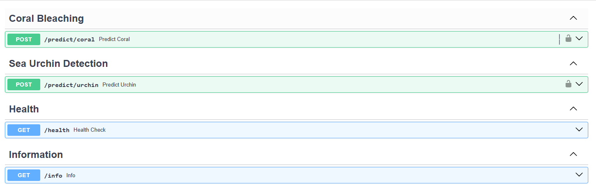

🌊 AI for Marine Ecosystems (AI4ME) API#
🚀 AI-powered API for Marine Ecosystem Research
AI4ME API provides low-code APIs for machine learning-based image analysis tools focused on marine research.
🔗 GitHub Repository: [AI4ME API Link(https://connect.fisheries.noaa.gov/ai4me)
📩 Contact: Michael.Akridge@noaa.gov
🔹 Features#
🌍 Platform-Agnostic: Low-code and accessible via Python, R, shell, or any HTTP client.
🔑 Secure: Requires an API key for restricted endpoints.
📊 Scalable & Fast: Leverages optimized YOLO models for rapid predictions.
🖼️ Supports Image Uploads: Accepts images up to 20MB.
🌊 Research-Focused: Designed for marine ecosystem analysis.
💡 Advantages of AI4ME API#
🔹 1. Low Code & Platform-Agnostic#
Works with Python, R, JavaScript, cURL, commandline and any HTTP client.
Accessible from desktop, cloud, or mobile.
🔹 2. Secure & Scalable#
Uses API key authentication for controlled access.
Supports high-throughput requests.
🔹 3. Research-Oriented#
Designed for marine ecosystem monitoring.
Helps scientists analyze coral health & urchin populations.
🔹 4. Fast & Efficient#
Uses optimized YOLO models for real-time predictions.
Processes images in milliseconds.
🛠️ How It Works#
1️⃣ Input Data (Image)#
Users upload an image via API request (local file or URL).
The image is processed by YOLO-based models trained for specific tasks.
2️⃣ API Processing#
The API validates the file (size, format).
The coral bleaching classifier or urchin detector model processes the image.
Predictions are filtered based on a confidence threshold.
3️⃣ Output Response#
The API returns structured JSON containing:
🔹 Predicted class (e.g.,
"coral_bl"for bleached coral)🔹 Confidence score (e.g.,
0.85= 85% confidence)🔹 Bounding boxes (for object detection)
⚡ API Request Flow#
1️⃣ User Submits Image#
POST /predict/coral (or /predict/urchin)
📤 Request:
User uploads an image (JPEG/PNG).
API validates file size & format.
2️⃣ Model Processes Image#
The YOLO model classifies the image.
Predictions are filtered by confidence threshold.
3️⃣ API Returns JSON Output#
📥 Response:
For Coral: Class label & confidence (e.g.,
"coral_bl" 85%).For Urchins: Bounding boxes + confidence scores.
🔐 API Security & Access#
Public Endpoints:
/health,/infoRestricted Endpoints:
/predict/coral,/predict/urchin(API key required)
🔑 How to Authenticate#
Every request to /predict/* must include:
X-API-KEY: your_api_key
Example in Python:
headers = {"X-API-KEY": "your_api_key"}
response = requests.post(url, headers=headers, files=files)
📌 Endpoints & Usage#

🔹 ✅ Health Check (Public)#
🔹 Check if the API is live
GET /health
Response#
{
"status": "OK",
"message": "API is running"
}
Coral Bleaching Classification#
🔹 Endpoint:
POST /predict/coral
🔹 Required Parameters:
Parameter |
Type |
Description |
|---|---|---|
|
Image File |
Coral reef image (max 20MB) |
|
Float (default=0.5) |
Confidence threshold for filtering predictions |
Example Request (Python)#
import requests
url = "https://connect.fisheries.noaa.gov/ai4me/predict/coral"
headers = {"X-API-KEY": "your_api_key"}
files = {"file": open("example_coral.jpg", "rb")}
response = requests.post(url, headers=headers, files=files)
print(response.json())
Response Example#
{
"model": "coral_bleaching_classifier",
"predictions": [
{"class": "coral_bl", "confidence": 0.85},
{"class": "coral", "confidence": 0.12}
]
}
Sea Urchin Detection#
🔹 Endpoint:
POST /predict/urchin
🔹 Required Parameters:
Parameter |
Type |
Description |
|---|---|---|
|
Image File |
Underwater image (max 20MB) |
|
Float (default=0.4) |
Minimum confidence for detections |
Example Request (Python)#
import requests
url = "https://connect.fisheries.noaa.gov/ai4me/predict/urchin"
headers = {"X-API-KEY": "your_api_key"}
files = {"file": open("example_urchin.jpg", "rb")}
response = requests.post(url, headers=headers, files=files)
print(response.json())
Response Example#
{
"model": "sea_urchin_detector",
"detections": [
{
"class": "urchin",
"confidence": 0.85,
"bbox": [2974.38, 765.22, 3528.17, 1394.35]
},
{
"class": "urchin",
"confidence": 0.73,
"bbox": [4257.12, 2783.82, 4684.24, 3146.24]
}
]
}
🚀 Get Started#
1️⃣ Request API access from Michael Akridge.
2️⃣ Use Python, R, or cURL to send requests.
3️⃣ Upload images and get AI-powered insights!
For full documentation, visit:
📚 API Docs
📂 GitHub Repository
📂 Backend Systems via FASTAPI